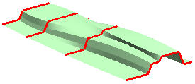
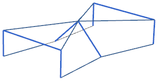

使用根据点对齐
如果您所创建的曲面形状与下图所示的曲面形状相似，这个曲面没有固定的形状，草图的尖锐拐角处并没有全部对齐，这是因为采用参数对齐方法，并且截面线串中所包含的曲线数目也不相同。

在这种情况下，可以使用根据点比较灵活地控制对齐。根据点对齐选项可以精确控制每个截面线串的对齐点。

|
注释 |
在每个截面线中的曲线数目都相同的情况下，参数对齐和保留形状可以得到同样的结果。根据点对齐方法可以用来指定一个截面线上的对起点对齐到另一个截面线中的哪个点，这样可以指定尽可能多的对齐点。 |
当选择根据点对齐时，NX会自动在每个截面线串上创建一些对起点。用户也可以根据需要自己创建一些对齐点，或者删除不需要的对起点。每个截面线中的第一个和最后一个对齐点是自动对齐的，因此您不能移动或删除。
在下面的示例中，中间截面上的两个对齐点被移动，以使它们重合，并且位于截面中两个曲线的端点处。
